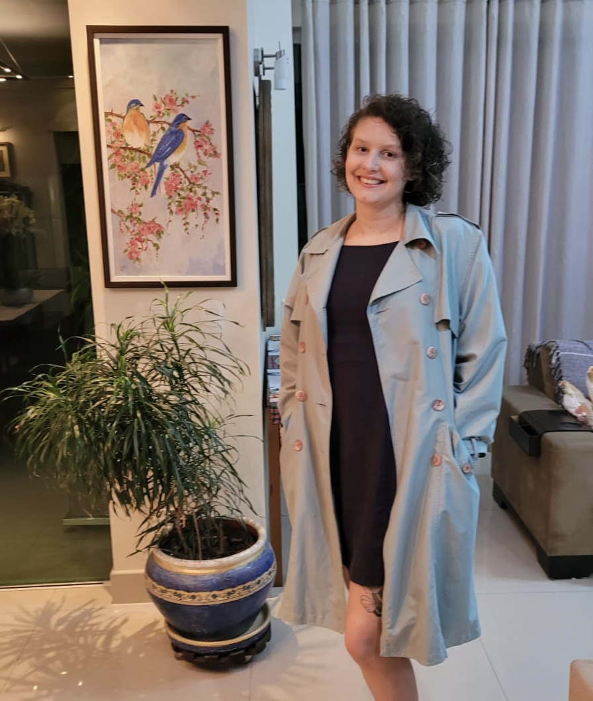
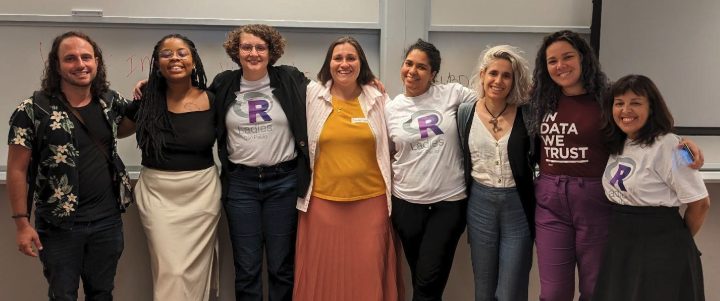

This is a repost, and the original article can be found in the R Consortium website.
Beatriz Milz, a co-organizer of R-Ladies São Paulo, recently spoke with the R Consortium about the vibrant growth of the R community in São Paulo and its commitment to inclusivity and accessible learning. Beatriz shared insights into the group’s activities, from organizing popular in-person and online events to coordinating a book club focused on the newly translated R for Data Science in Portuguese. She also discussed the unique needs of R users in Brazil and how R-Ladies São Paulo supports beginners and advanced users through collaborative events and community-driven resources.

Please share your background and involvement with the RUGS group.
My background includes a bachelor’s degree in environmental management, a master’s in environmental analysis, and a PhD in environmental sciences. During my master’s program, my supervisor mentioned that I needed to learn R to analyze the data we were collecting. However, no one in the lab was familiar with R or able to assist me. I attempted to learn it independently, but that didn’t work well.
Eventually, my supervisor connected me with another professor, and a postdoc in his lab helped me with the analysis for my master’s dissertation. While that assistance was beneficial, I felt uncomfortable relying on others to conduct the analysis. After finishing my master’s and before starting my doctorate, I decided that I wanted to learn how to program so I wouldn’t have to depend so heavily on fellow researchers for data analysis.
I started trying to learn R again after a friend mentioned the R-Ladies group. In 2018, I discovered that a new group was starting in São Paulo. I attended their first event, which was an incredible experience. Around that time, I began to learn R.
In São Paulo, we don’t just organize events; we also have a group on Telegram where we can communicate between events. It allowed me to ask for recommendations on learning materials, pose questions, and receive help from others in the group. This support was invaluable to my learning process.
Two months after getting involved, I began helping in the group. Initially, the group was relatively new, and one person mainly did most of the organizing tasks: Haydee Svab. She expressed a need for assistance, not just with R-related tasks but also with organizing events. So, I started to help, and I am still one of the co-organizers today, while Haydee remains the lead co-organizer.
It’s been six years since I began participating in the group, and I’m currently a postdoc involved in much work with R.
Can you share what the R community is like in São Paulo?
Our group consists of researchers from various fields who want to learn R or have already used it. Many journalists started using R a few years ago and joined our group. Now, these journalists often invite other journalists. We have many journalists who need to learn R to analyze public data from the government for their journalistic work in newspapers.
We also have many members with a background in Statistics. Since most university courses typically use R, students joining our group already have experience with it from their undergraduate studies. Additionally, many individuals from the industry use R for consultancy in various fields. I am currently doing a postdoc, but I also worked with consultants for two years, during which time I used R extensively.
In R-Ladies São Paulo, how many events are typically held each year?
It varies. This year, we hosted two in-person and many more online events—11. We held an average of 6.5 events per year. However, this year, we focused more on online events and had fewer in-person ones, mostly because booking venues for in-person events has been more difficult.

Regarding your experience, are people more interested in online or in-person events?
People engage more in in-person events. They look forward to attending these events because we usually have limited seats, which fill up quickly. We often have a waiting list for those who want to attend. If someone cancels, we can soon offer their spot to someone on the waiting list.
On the other hand, online events tend to have a different pattern of participation. Fewer people attend in real-time, but many engage later by watching the recorded sessions and leaving comments. This flexibility allows those who cannot participate live to catch up afterwards.
While online events can have a broader impact on reaching a larger audience, in-person events typically draw more attendees at once. For instance, we have a YouTube channel where we post recordings of our online events. One particular event we held during the pandemic garnered 13,000 views, demonstrating significant engagement after the event. However, only some online events achieve that level of viewership; the median for recorded events is 330 views. Nevertheless, I see value in these recordings, as they provide material for those who want to engage later. Sometimes, people are simply not available to attend live.
Please provide us with an update on your group’s recent activities.

I wanted to discuss a series of events related to the book club we’re hosting. In Brazil, we speak Brazilian Portuguese. An editorial group published the highly regarded book R for Data Science in Portuguese. The first edition is available only through purchase, but the English version is free online.
Some communities have done volunteer translations; for instance, there is a Spanish version. When I learned that a second edition of the book was being written, I contacted the authors to ask if we could translate it into Portuguese with the community’s help. It took some time because the authors needed approval from O’Reilly, the publishing company producing the book.
We received confirmation that we could begin the translation. The book’s second edition has been translated and is now available in Portuguese! The translation team is not limited to the R Ladies community; it includes contributions from more than 20 people from different backgrounds.
This book club focuses on discussing the translated Portuguese version of the book. Since February, we have held online meetings to discuss the book chapters. Members from the R Ladies community present these discussions, allowing participants to ask questions and engage in dialogue. These events have been working well.
I have been referencing this book whenever someone asks for material. Many people will already be familiar with it as we continue to promote it. We have also been using and sharing this resource extensively.
Now, the book’s second edition is available in Portuguese online and for free, so anyone with an internet connection can access it. It is an excellent way to share knowledge for those who can afford to buy the book and for anyone with internet access, making it a valuable study resource.
What are some trending topics from the group?
Our events with introductory content attract more participants. It is likely because many attendees are either new to the subject or at an intermediate level, where they feel comfortable studying independently. The most popular topics are introductory sessions.
However, when we asked participants about their interests in different topics, many wanted to learn about machine learning and other trending subjects like deep learning and artificial intelligence. The challenge is that we need more experienced individuals to teach these advanced topics. While many people are interested in these areas, organizing events around them can be more difficult due to the complexity involved.
What techniques do you recommend for planning or conducting the event? (e.g., GitHub, Zoom, etc.) Can these techniques help make your group more inclusive for people unable to attend in-person events in the future?
We use StreamYard for our online events. The free version has proven helpful. Previously, when we hosted events on Zoom, we needed to edit recordings and upload them afterwards. This process often took a while, mainly because everyone was busy, and it delayed recording the events online. StreamYard has made the process easier for us, although it does offer less space for participant interaction.
We have a chat feature with StreamYard, but participants can also share their screens on Zoom. Therefore, the platform we choose depends on the kind of event we want to conduct. Participants must share their screens for some events, so we opt for Google Meet or Zoom.
One significant improvement has been our use of GitHub. We created issue templates as a to-do list for organizing our upcoming events. This system helps us remember everything we need to do.
Additionally, we have a blog that invites community members to contribute articles. It allows individuals to write about interesting topics regardless of expertise. Some people hesitate to present at events but feel comfortable writing blog posts. It serves as their first contribution or participation in our community, shifting them from just participants to active contributors.
Overall, the blog is an excellent way to encourage people to make their first contributions.
How do I Build an R User Group?
R Consortium’s R User Group and Small Conference Support Program (RUGS) provides grants to help R groups organize, share information, and support each other worldwide. We have given grants over the past four years, encompassing over 76,000 members in over 90 user groups in 39 countries. We would like to include you! Cash grants and meetup.com accounts are awarded based on the intended use of the funds and the amount of money available to distribute.